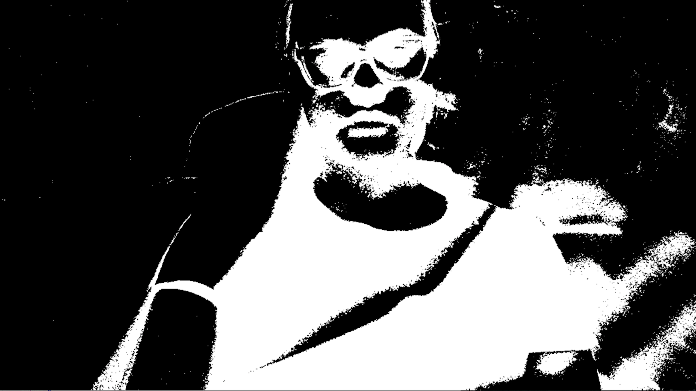

First Implementation using color segmentation
Method and Implementation
In our implementation of the Gesture Recognition assignment, we decided to create an interactive game where the user plays several games of paper scissors rock against the machine. The user plays by having his hand in front of the camera, using a movement to start a round, and simply shooting either paper, scissors, or rock at the correct time in order to compare it against the machine's output and then decide who the winner is for the round.
Description
For our code, we decided to use color segmentation in order to find the place where the hand is located. After that, we depended a lot on the openCV function findContours, which helped us get a very clear image of the largest area available after our color segmentation function - the hand.
By using this function, we were able to get the hand in a well defined shape. After having a good grasp of the hand, we decided to go with finger counting, we achieved this by using the function Convex Hull.
Logically, we are calculating the convex hull of our largest contour. Convex Hull ends up returning a polygon from which we deducted that the corners would be seen as the fingers.
From there, the algorithm is fairly simple, from 0-1 fingers it is "rock", from 2-3 it is "scissors", and any more than that it is "paper".
We also worked on detecting the center of our hand (as shown with the blue circle) in order to be able to track the movements of it.
The algorithm for palm center detection finds the defects (the distance between the tip tow and the convex point) and using the defects array, it calculates the palm center. It gets the rough palm center by getting the average of all defect points. Then it chooses the closest 3 points and gets the circle radius and center which is the palm center. There is a possibility that the points are on the same line. For that reason, the algorithm makes sure that the radius is valid.
Results
Since we used color segmentation in order to identify the hand, the results of the program depend a lot on the background. The experiments were conducted with the dark background, for that reason they are pretty accurate.
Motion Detection
In order to detect the motion, we used frame differencing that converts the whole image into black and white pixels. White pixels indicate the difference between frames. In order to detect the hand motion, we compared the number of black and white pixels. Thus, when the number of white pixels is larger than the number of black pixels (one can play with this comparison), the algorithm indicates the motion and exits the program.
Second Implementation using template matching
Method and Implementation
Another technique that can be used to determine the gestures is template images. We found three images online which included a rock, paper, and scissors hand gesture with a black background. To generate the contour image, the program put the image through several filters such as a grey scale, blue and a threshold analysis to generate a binary image. The skin detect function converts each frame into binary. This distinguishes the hand from other objects in the area by choosing the largest contour that the program can find. The final step is to find the convex hull of the largest contour, which will be the hand in this case, and compare it to the template hulls of the still pictures. We incorporated several functions that are in the code that determine these calculations. There is also a skin detect function that determines which part of the frame is skin color by judging the RGB values.
Templates Used
Results
The matchShapes function returns a measurable value (the countour_match value) that represents how similar the template and the observed subject are (a value 0 indicates a perfect match between the two shapes). So we played around with our gestures and determined a few threshold values in the code that would somewhat capture the correct values. Given these thresholds, we tested this part in trying to calculate the overall classification accuracy. Going with the thresholds stated in the program, we tried doing several gestures of rock, paper, and scissors.
Discussion
Given the accuracy and reliability rates, the system does a good job recognizing gestures. The convexHull method was the better techniques used for this component. The threshold value was expected to be closer to zero/much steeper when the program identified a matching shape. However, with more testing and proper background, the program can better detect the hand. Sometimes the program would confuse other objects as human skin tone, so for now we just tried to have a clean background when it came to testing. Maybe in the future the skin detection function could use some more work and be able to recognize both hands as only the right hand was used for this assignment.
Conclusion
Hand gestures are important for communication throughout many different cultures and societies. Therefore, there should always be ongoing research on how technology can better capture gestures and emotions. Given the reliability and accuracy rates of our program, it can determine the hand and motion gesture at an pretty solid rate. We can expand on these methods by including more gestures and motions or even fine tuning the contouring of the program. But this program is a good start to better understand computer vision.